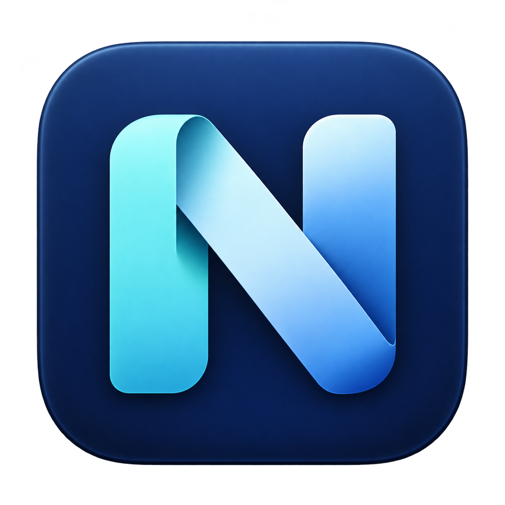

01 / CLIPBOARD
Clipboard history
Find text and images you copied earlier, search text history and preview images. Set retention limits, pause recording or exclude selected apps.
TFind something you copied earlier⌕

Nivlet for MacManage clipboard history, arrange windows and launch apps.
Choose which browser opens links from each app or website.
Apple Silicon / Intel · Free & open source · Signed & notarized
Now Developer ID signed and Apple notarized. Apple Silicon and Intel downloads include stapled notarization tickets. Accessibility permission is still required for protected features.
Enable the features you need and configure them in Settings. No coding or separate Hammerspoon installation required.
Find text and images you copied earlier, search text history and preview images. Set retention limits, pause recording or exclude selected apps.
Set shortcuts for 29 window actions, including halves, thirds, a 3×3 grid, centering, moving between displays and restoring the original position.
Assign shortcuts to open apps or bring them to the front, with brief feedback when triggered. Replace apps, reorder rules and check for duplicates or conflicting shortcuts.
For example, open WeChat links in Safari and links from development tools in Chrome. Set rules by source app or website, with a fallback browser for unmatched links. Some apps may not provide an identifiable source.
Show network speed in the menu bar and CPU, memory and other information in its menu. Assign an input source to each app and switch automatically when you change apps.
Export settings as a JSON file and import them on another Mac. Choose Chinese or English and light or dark mode. Save or discard changes per page, with markers for unsaved changes.
Fix rule saving for apps with dotless Bundle IDs, including FinalShell. Developer ID signing, Apple notarization and updates for both architectures remain available.
Release notes ↗Open the downloaded DMG and drag Nivlet.app into Applications, then launch it. Alternatively, download the ZIP, extract it and move the app into Applications.
Window actions and Option-paste need Accessibility. Migrating from an old ad-hoc build may require reauthorization once; routine updates with the same developer identity generally retain it. Do not disable Gatekeeper; stop and report unexpected security alerts.
Click the N menu bar icon to open Settings, enable the features you need and click Save. To use browser routing, also set Nivlet as the default browser.
Settings and clipboard history stay on your Mac and are not uploaded. Persistent history uses a local plaintext cache; pause recording before copying sensitive content. Update checks, downloads and opening websites require a network connection. This site uses no analytics scripts or tracking cookies.
macOS 13.0+, Apple Silicon (arm64) or Intel (x86_64). Latest release: v1.0.8 / Build 54.